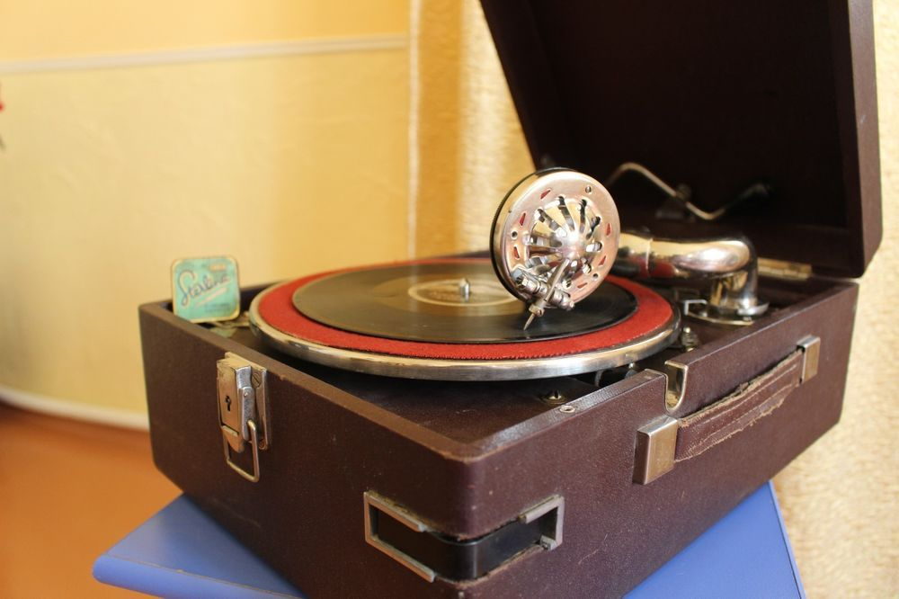
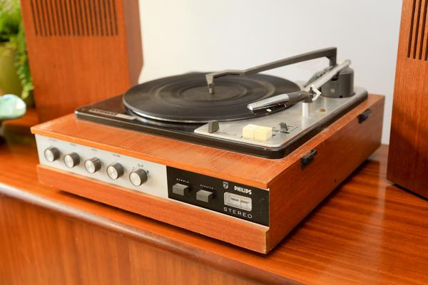
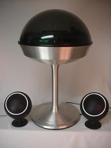

 Com os avanços tecnológicos que sugiram durante a evolução do gramofone, como a substituição do sistema de corda para um eletrônico que rotacionava o disco, os tocadores de discos elétricos, toca-discos, vitrolas sugiram após o desenvolvimento do primeiro amplificador valvulado eletrônico criado no Bell Labs em 1916 permitindo que o primeiro alto-falante elétrico comercial fosse fabricado em 1924, sendo assim, era possivel a substituição dos métodos acústicos anteriores dos fonógrafos, grafofones e gramofones por meio de tubos de escuta e cornetas. Todavia por causa da grande depressão logo no inicio de sua vida, os toca-discos sofreram para sua popularização, assim como toda a industria fonográfica. Sendo esta a mais terrivel crise que já atingiu a industria da música gravada, maior ainda do que o impacto da música digitalizada e não física no início do século XXI.
 Por causa disto grandes mudanças e a popularização dos toca-discos vinheram somente após a segunda guerra mundial como os discos de 33 RPM 16", V-Disc, que foram inventados pela marinha real britânica que os utilizava em gravações de altas frequencias para rastrear submarinos, a partir deles Peter Goldmark, chefe de pesquisa da CBS-Columbia nos EUA, trabalhou em discos de 33.3 RPM 12" que gravavam micro-ranhuras que ofereciam qualidade de som muito melhor, paralelamente, ele introduziu o braço leve e a agulha de safira nas plataformas giratórias. O resultado de seu trabalho, o álbum de 33.3 RPM 12" em um composto plástico chamado vinilite (ou 'vinil') em vez de goma-laca, estreou em 1948, enquanto a empresa rival RCA Victor lançou o disco alternativo de 45 RPM 7" no ano seguinte, sendo ambos e o disco de 78 RPM os formatos padrões do toca-discos.

Entretanto somente na década de 60 que os toca-discos se tornaram muito mais comuns nas casas, e com a incrível ascensão de uma banda de Liverpool, na Inglaterra, chamada de Beatles, os discos de vinil contendo seus singles e álbuns de sucesso dispararam para vender milhões, criando o que agora é conhecido como a idade de ouro de vinil que durou de 1960 a 1970.
Durante esta era, as empresas começaram a produzir toca-discos mais baratos para atender à demanda. Além disso, foram inventados toca-discos que podiam empilhar vários discos de vinil, mas eles não foram vistos amplamente como o player padrão, uma vez que geralmente tinha canetas mais pesadas que podiam danificar os discos.
Foi também nessa época que a estética da era espacial se tornou popular devido ao crescente interesse das pessoas na exploração espacial. Como tal, o toca-discos que apresentavam designs futuristas tornaram-se disponíveis, e um dos players mais conhecidos com o referido design é o toca-discos Apollo, que estranhamente parece um OVNI à distância.